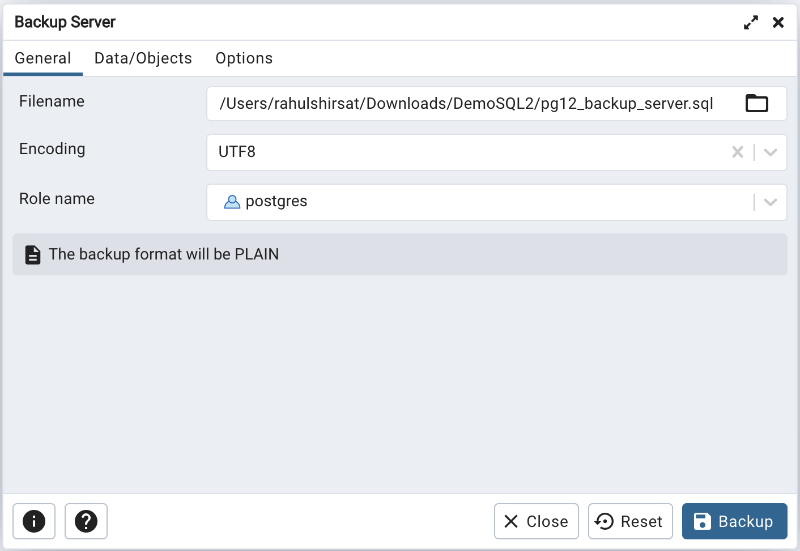

Backup Server Dialog¶
Use the Backup Server dialog to create a plain-text script that will recreate the selected server. You can use the pgAdmin Query Tool to play back a plain-text script, and recreate the server.
Use the fields in the General tab to specify the following:
Enter the name of the backup file in the Filename field. Optionally, select the Browser icon (ellipsis) to the right to navigate into a directory and select a file that will contain the archive.
Use the Encoding drop-down listbox to select the character encoding method that should be used for the archive. Note: This option is visible only for database server greater than or equal to 11.
Use the drop-down listbox next to Role name to specify a role with connection privileges on the selected server. The role will be used for authentication during the backup.
Click the Data/Objects tab to continue. Use the fields in the Data/Objects tab to provide options related to data or pgAdmin objects that correspond to pg_dump.
Move switches in the Type of objects field box to specify details about the type of objects that will be backed up.
Move the switch next to Only data towards right position to limit the back up to data.
Move the switch next to Only schema to limit the back up to schema-level database objects.
Move switches in the Do not save field box to select the objects that will not be included in the backup.
Move the switch next to Owner towards right position to exclude commands that set object ownership.
Move the switch next to Privilege towards right position to exclude commands that create access privileges.
Move the switch next to Tablespace towards right position to exclude tablespaces.
Move the switch next to Unlogged table data towards right position to exclude the contents of unlogged tables.
Move the switch next to Comments towards right position to exclude commands that set the comments. Note: This option is visible only for database server greater than or equal to 11.
Move switches in the Queries field box to specify the type of statements that should be included in the backup.
Move the switch next to Use Column Inserts towards right position to dump the data in the form of INSERT statements and include explicit column names. Please note: this may make restoration from backup slow.
Move the switch next to Use Insert commands towards right position to dump the data in the form of INSERT statements rather than using a COPY command. Please note: this may make restoration from backup slow.
Move the switch next to Include DROP DATABASE statement towards right position to include a command in the backup that will drop any existing database object with the same name before recreating the object during a backup.
Move switches in the Disable field box to specify the type of statements that should be excluded from the backup.
Move the switch next to Trigger (active when creating a data-only backup) towards right position to include commands that will disable triggers on the target table while the data is being loaded.
Move the switch next to $ quoting towards right position to enable dollar quoting within function bodies; if disabled, the function body will be quoted using SQL standard string syntax.
Move switches in the Miscellaneous field box to specify miscellaneous backup options.
Move the switch next to With OIDs towards right position to include object identifiers as part of the table data for each table.
Move the switch next to Verbose messages towards left position to instruct pg_dump to exclude verbose messages.
Move the switch next to Force double quotes on identifiers towards right position to force the quoting of all identifiers.
Move the switch next to Use SET SESSION AUTHORIZATION towards right position to include a statement that will use a SET SESSION AUTHORIZATION command to determine object ownership (instead of an ALTER OWNER command).
Click the Backup button to build and execute a command based on your selections; click the Cancel button to exit without saving work.
pgAdmin will run the backup process in background. You can view all the background process with there running status and logs on the Processes tab